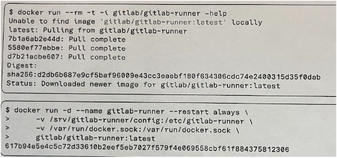
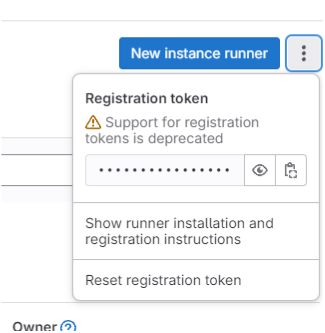
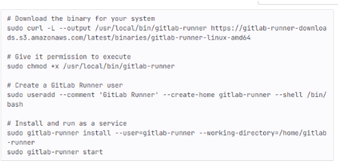
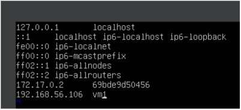
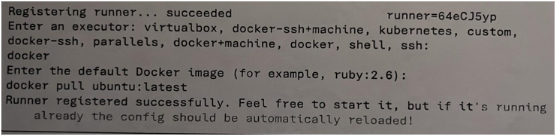
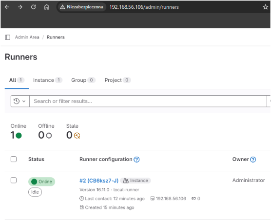

1. Wprowadzamy te dwie komendy.
2. Po wykonaniu pierszych dwóch komend w zakładce AdminArea/ CI/CD /Runners możemy zobaczyć klucz ale też:
Klikamy: Show runner installation and registration instruction
Pokazuje się okienko z następującymi komendami:
Teraz możemy wykonać wyżej wypisane komendy komendy.
3.Następnie wpisujemy:
4. Dopisujemy adres hosta i nazwe użytkownika. Wychdzimy z vim i z basha.
5. Teraz możemy użyć komendy:
Dwie pierwsze opcje możemy zostawić puste w trzeciej wpisujemy:
6. Koniec wygląda jak na dostarczonych wcześniej materiałach:
W ten sposób mamy gotowy runner w gitlabie
